| 建模 Modeling | 模型 = 状态 + 行为 Model = State + Behavior |
| 自然语言 Nature | 事物 = 属性 + 行为 Thing = Property + Behavior |
| 计算机数学 Computer | 对象 = 数据 + 运算 Object = Data + Operation |
| 机器语言 Machine | 程序 = 字节 + 指令 Procedure = Bytes + Instructions |
| 面向过程 Procedure Oriented | 程序 = 变量 + 函数 Procedure = Variables + Functions |
| 面向对象 Object Oriented | 对象 = 属性 + 方法 Object = Field + Method |
理论上一切数据都是二进制字节，但用于为现实构建模型极其困难，引入数字(number)，文字(character)和逻辑值(boolean)三种数据，情况就会大为改观。通过基本-演绎法，这三种基本数据，连同基本运算和基本命令将演绎出整个语言系统。
注： 基本-演绎法，假设一些基本概念和规则，并借此推导演绎出整个系统体系。如同
1. 几何体系里由点，到线，再到面，有限的几条公理推导出整个数学系统。如何证明勾股定理？
2. 颜色系统里的红绿蓝三原色，可以调配出任何颜色。红色+绿色=黄色，红色+蓝色=？
3. 不同数量的中子，质子和电子，结合成不同类别的原子，并构成宇宙万物。H2+O=H2O, 氢和氧的差别是什么？
4. 干细胞分化成各种功能细胞，自我更新复制，形成各组织器官，最终成为人。
5. 易有太极，是生两仪，两仪生四象，四象生八卦。
6. 7个音符排列组合产生无穷的乐曲。
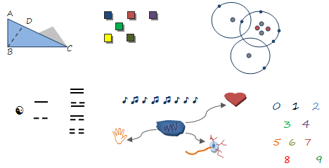
number: 数字，确切来说是实数real number, 不包括虚数如1+2i，可以细分为整数int和小数float，如12345，-67890， -3.1415926，2.5e-2 (= 2.5 x 10-2 = 0.025)
自然数是一切数字的基础，通过不同的运算，产生不同的数字类型。自然数相加依然是自然数，自然数相减可产生负整数，自然数(0和正整数)和负整数统称为整数。整数也可以分为奇数和偶数。整数相乘依然是整数，整数相除可产生小数，整数和小数统称为有理数(有限循环小数)。有理数乘方(整指数运算)依然是有理数，有理数开方(小数指数运算)可产生无理数，有理数和无理数统称为实数。实数也可以分为正数和负数。负数的偶数次开方可产生虚数。实数和虚数统称为复数。
boolean: 逻辑值，又称布尔值，只有true和false，理论上可以用整数1和0分别表示。逻辑值对流程控制起着重要作用，这样程序就不仅仅是顺序执行，还可以选择分支和循环多次执行。比如以下例子ask_friend_out：如果天气晴朗，那么挨个约小伙伴，不答应就找下一个，直到有人答应（万一没人答应呢？）；要是天气不好，就大睡一觉。 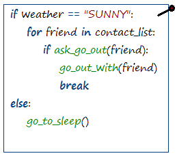
character: 文字，单个字符如 ’a’,字符串string则是多个字符组成的序列，如”Hello world!”。 每个字符对应着编码表的一个整数，如’a’对应ASCII十进制编码的97，’中’对应Unicode十六进制编码的4e2d16 = 2001310。以下是部分ASCII编码表： 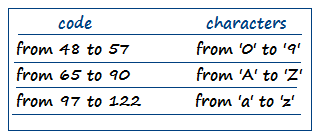
byte: 字节，有8个二进制位组成，比如10101100。所有数据和代码在计算机内部都是字节序列。
| + | 加法，两个数量累加之和。这是一切数学运算的基础，所有其余运算都可以溯源到加法。a + b = ? |
| - | 减法，加法的逆运算，已知两数之和以及其中一个数，求另一个数。在计算机领域可以通过补数这个概念把减法统一到加法。a + ? = c |
| * | 乘法，重复多次加法运算。N个a相加： a + a + … + a = a * n |
| / | 除法，乘法的逆运算，已知两数之积以及其中一个数，求另一个数。a * ? = c |
| and | 并且，也可写作 &&，表示两个条件同时为真true结果才为真true，否则结果为假false。 |
| or | 或者，也可写作 ||，表示两个条件同时为假false结构才为假 false，否则结果为真true。 |
| not | 否定，不是，也可写作!，值为true则结果false，值为false则结果为true。 |
字符串运算：+（字符串合并），length（获取长度）, []（截取子字符串）。 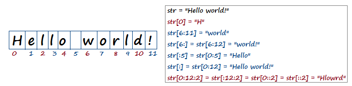
位运算：&（按位与）, |（按位或）, ^（按位异或）, ~（按位取反）, >>（位右移）, <<（位左移）。这些运算对字节有效。
| 值类型 | 运算结果 |
| number | 常识上的数字比较。1<2为true，1>2为false。注意1.000==1为true。 |
| boolean | 假想0代表false，1代表true，那么运算结果就归为数字比较。 |
| character | 每个字符其实对应着一个整数编码，比较字符大小也归结为整数比较。比如’A’的编码为65，’B’的编码为66，’a’的编码为97，所以’A’<’B’为true，’A’<’a’为true。字符串大小比较则是依次比较每个字符的大小，字符大的代表字符串大。比如“abcdef”<“abcg”为true。 |
| 自定义类型 | 必须自定义比较大小的逻辑，比如我们定义类型People (有两个属性id和名字name)，由id决定大小，还是name决定大小，还是两者兼有呢？此时比较大小的实际意义就是排序。每个值在内存都会有唯一的地址（一个整数序号），缺省时比较大小就是比较地址的大小，但此时的比较结果意义不大，因此也可以把系统设计为抛异常告诉用户未定义比较大小的逻辑。 |
| 不同值类型 | 因为不同类型代表着不同的理念，理论上没有比较的意义，可以阻止该比较（编译时报错，或者运行时抛异常），或者按内存地址比较大小（结果意义不大）。 |
赋值：单个等号=(区别于双等号==所代表的判等)，变量赋值，可以理解为名字与值的关联，null表示未与任何值关联。当我们写下age = 22时，发生了什么？而weather = “SUNNY”呢？我们有两种赋值模型，一种为标签模型，一种为盒子模型。对于标签模型，任何名字不过是一个标签，它可以贴到任何值上，我们可以把age贴到22上，下一秒又贴到32上，甚至可以贴到true或者“SUNNY”上（虽然不合理）。对于盒子模型，任何名字都会得到一个盒子用于存放值，age=22，此时age盒子存放了一个22，age=32则盒子的存放值变为32，但盒子放不下true或“SUNNY”, 因为类型不同。显然，盒子模型比标签模型耗费更多的空间，所以常见的还有混合模型，对于基本数据类型(number, boolean, character)，我们分给它一个类型匹配的盒子，而对于复杂类型(比如 string， People)，我们要一个标签就够了，这个类型匹配的标签也被称为指针。 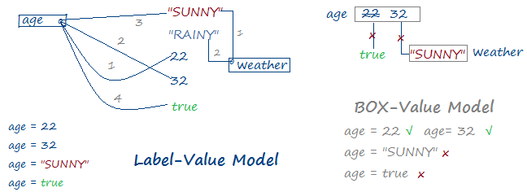
输入/输出：input / output
input: 输入，可表示为read，从输入源读取数据，输入源可以是键盘，或者文件等。
output: 输出，可表示为write，还常常表示为print，将数据写入到输出源，输出源可以是屏幕，或者文件等。
分支选择：if-else，如果…那么…否则…，参照boolean和逻辑运算的例子。 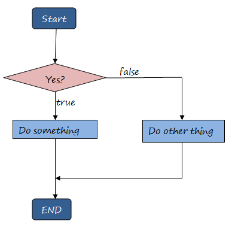
循环：while(当条件为真进入循环，否则退出循环), for（遍历列表元素）, break（直接跳出循环）, continue（中断本次循环，进入下一次循环） 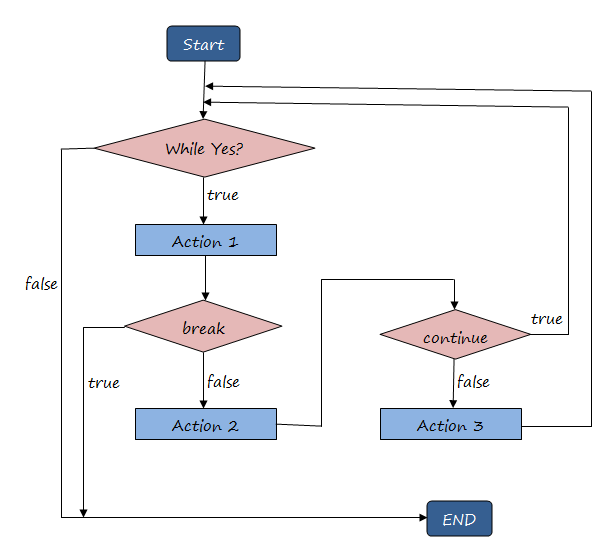
func：函数，是对基本运算的扩展，把一系列的基本运算组合起来，形成高一个级别的复杂运算。如果把基本运算看作小运算，那么函数就是大运算，函数的组合就是大大运算。从数学的角度看，函数定义了参与运算的参数（输入参数）与运算结果（返回值）之间的映射关系。简单来说，函数定义了怎样的输入，会有怎样的输出。 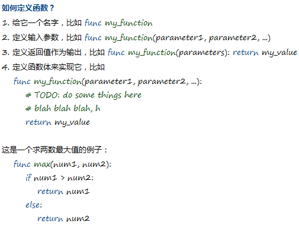 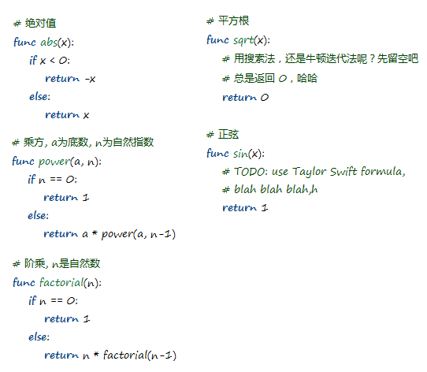
class：数据类型，是对基本数据的延伸，把一系列变量和函数组织起来，以变量模拟对象的属性，以函数模拟对象的行为，形成高一个级别的复杂数据。如果把基本数据看作小数据，那么数据类型的实例就是大数据，类型的组合就是大大数据。
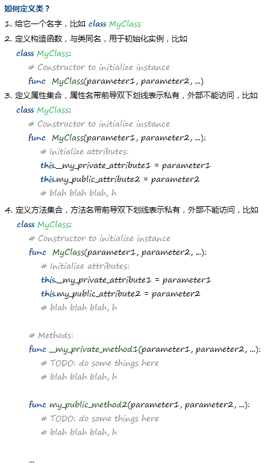
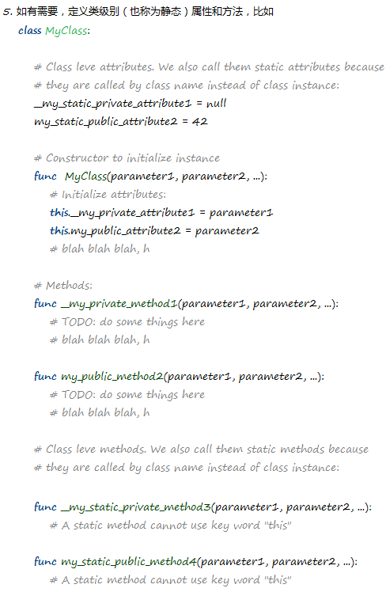
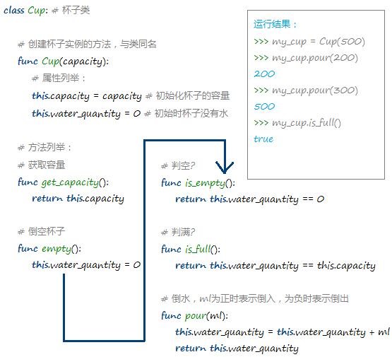
或者简略为
1.构建(Build) =编译(Compile) +连接(Link)
doc –o hello_world.exe hello_world.do datetime.o
2.执行(Execute)
hello_world Claire
为do写一个编译器或解释器，不是一件容易的事情，也不是我们此刻的重点。当然你哪天把它实现了，可是相当的赞哟。如果等不了，我们就选一种现有的编程语言吧。现在的编程语言都是图灵完备的，也就意味着所有语言的计算能力都是等价的，所以不存在一种语言可以做，而另一种不可以做的事。那我们挑哪一种呢？我个人主观上认为，一种好的语言，应该通用，简洁，强表现力，更有甚者能启发思维，正所谓语言是思想的载体。通用，意味着用的人多，懂的人多，便于沟通，是非常现实的考量，就像中文和英文，很少人学罗马尼亚语吧。简洁，意味着所写即所想，不废话，无需拐弯抹角，直达目标，Write less, do more，从而带来读和写的舒适，比如中文，言简意深（但废话起来也可以相当废话）。强表现力，表现在视觉的形象布局上，图形化是一个不错的方向，一图胜千言。这里我要告诉你一个秘密，我们的do 其实就是python的变种。
只需要注意python的以下几点：
1. 虚数被支持，如1+2i;
2. 用None代替null;
3. 用def代替func;
4. 没有this, 所以它需要被定义为函数的第一个输入参数，通常叫self而不是this, 比如类Cup的函数is_empty需要写成 def is_empty(self);
5. 构造函数不与类同名，而是__init__();
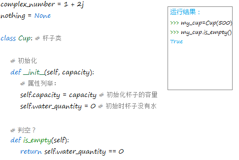
注： 在编程语言中，标识符不能有空格，比如symbol name 要写成symbolname, symbol_name, , symbolName, SymbolName, SYMBOL_NAME, symbol-name。
一些标识符命名的例子：
Python: variable_name, function_name, ClassName, CONSTANT_NAME, module_name
Java: variableName, functionName, ClassName, CONSTANT_NAME, packagename
C#: variableName, FunctionName, ClassName, CONSTANT_NAME, NameSpace
C++: variableName, FunctionName, ClassName, CONSTANT_NAME, namespace, file_name
C: variableName, FunctionName, ClassName, CONSTANT_NAME, file_name
拿出一张纸，写上print("Hello world!")，运行结果如愿：Hello world! 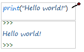
嗯，有点无聊，让它变得有趣些吧，比如说说中文。 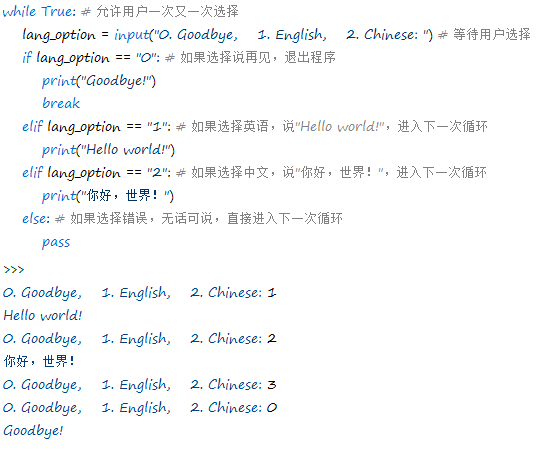
哎呦， 不错哦。如果让它支持日文呢，需要改代码两处地方：
1. input("0. Goodbye, 1. English, 2. Chinese, 3. Japanese: ")
2. 多加一个elif lang_option == "3": print("こんにちは世界！")
可以预见，每支持一种语言，就要做类似的改动，代码也会因此变得越来越长。我们试试让代码能动态处理数据，也就是变化的数据，不变的代码。这样就能将代码的改动转变为仅仅是数据的改动。以下的代码乍一看要复杂些，但我们仅仅改变支持的语言列表就能达到相同的效果。如果支持的语言列表移到外部文件，那么以后代码无需做任何改动，就能支持新的语言。 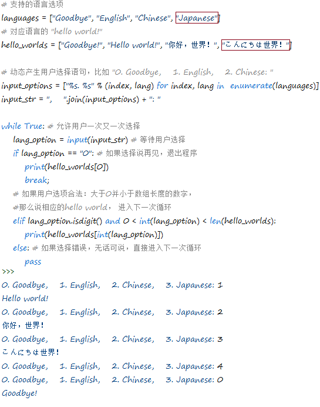
我们来写个Hello World故事吧，流程如下：
1. 选择语言，比如English，Chinese；
2. 选择名字，以此作为主角，比如Claire；
3. 记录开始时间；
4. 以选择的语言说Hello，比如”Hello Claire!”;
5. 以选择的语言加载剧本，并根据不同的选择，逐段开展故事；
6. 记录结束时间；
7. 以选择的语言说Goodbye，比如“Thank you. Goodbye!”
其中开展故事是核心，你可以根据自己的意图来设计故事。代码简要示例请参考附件Hello World 1.0。运行效果如图 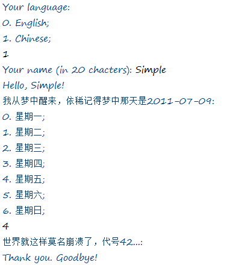
其实呢，我设计的部分情节是这样的 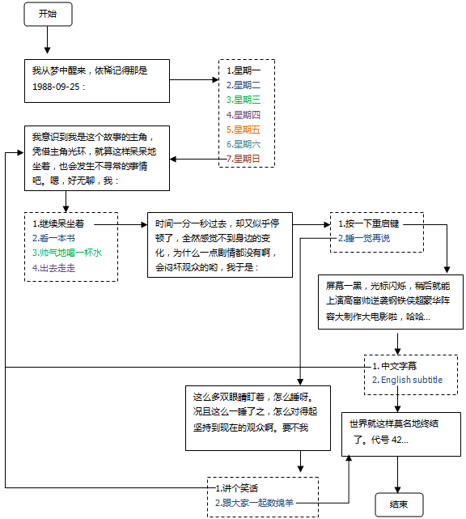